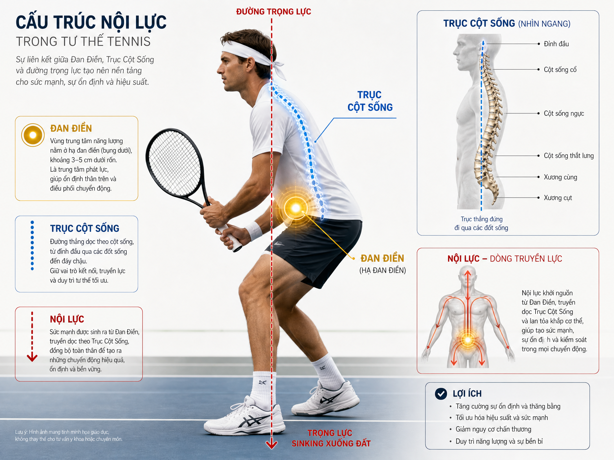
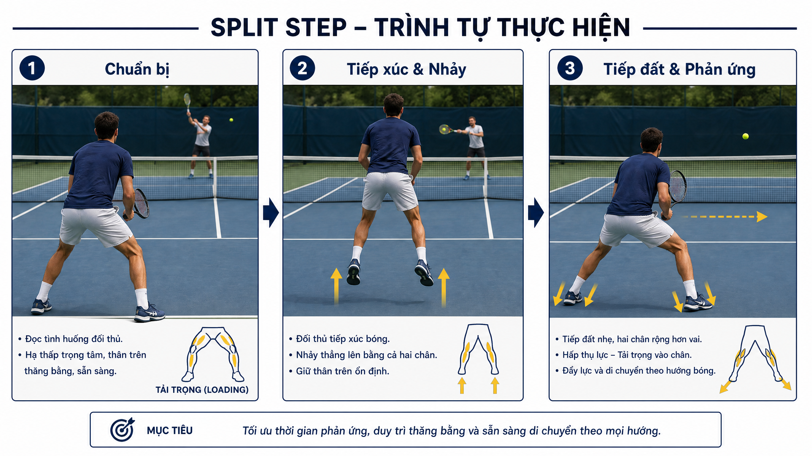
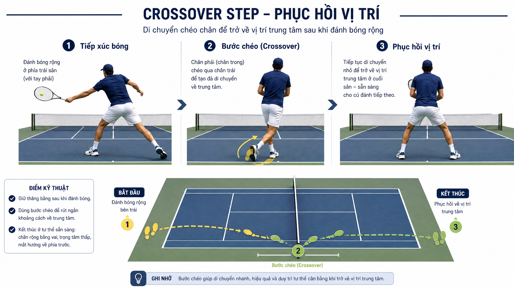
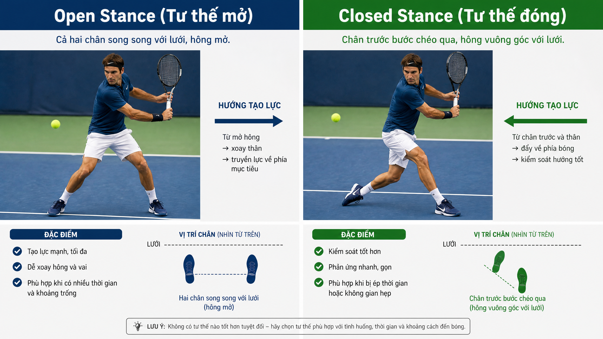
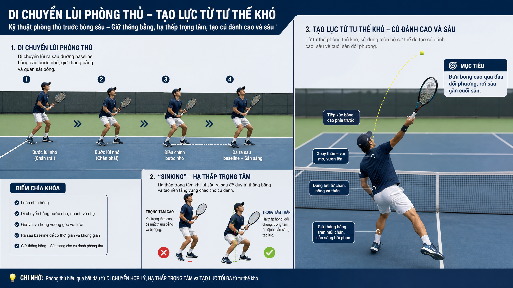
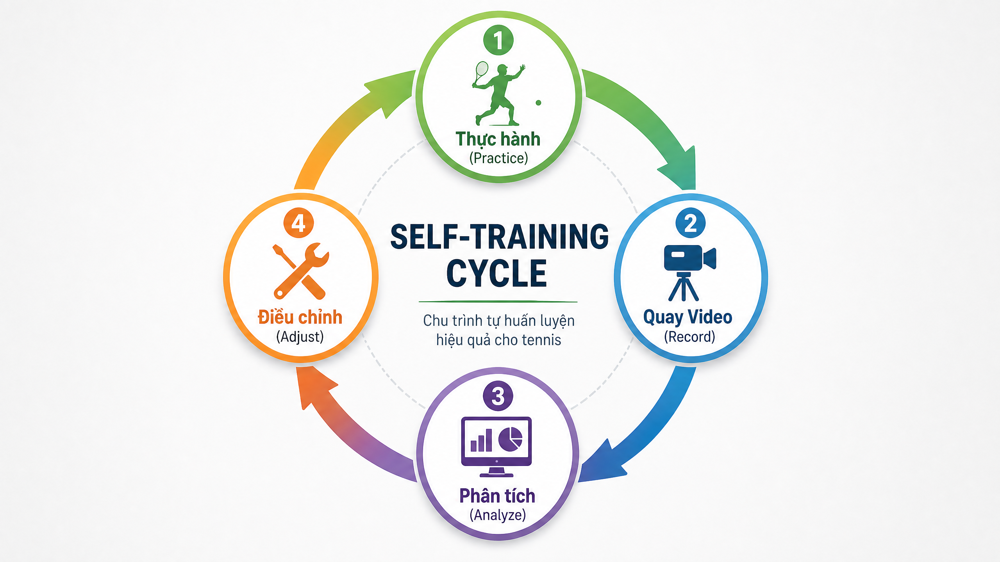

TENNIS_FUTURE_LAB_TÀI_LIỆU_HƯỚNG_DẪN_HỌC_TENNIS_CHO_HỌC_VIÊN_CẤP_3.0¶
TENNIS FUTURE LAB: TÀI LIỆU HƯỚNG DẪN HỌC TENNIS CHO HỌC VIÊN CẤP 3.0
Lời Giới Thiệu
Chào mừng bạn đến với tài liệu hướng dẫn học tennis dành cho học viên cấp 3.0 của Tennis Future Lab. Tài liệu này được thiết kế dựa trên Framework RPM --- Reactive Perception-Movement (Nhận thức Phản xạ - Vận động), một hệ thống vận động thần kinh đột phá do Henry Phạm phát triển.
Triết lý của Tennis Future Lab khẳng định rằng: RPM không đơn thuần là một hệ thống kỹ thuật đánh bóng. Đây là một hệ thống vận động thần kinh toàn diện, tích hợp nhận thức phản xạ, nội lực nền tảng từ triết học vận động nội gia (như Thái Cực Quyền, Aikido) và bộ pháp chủ động. Thực tế cho thấy, người chơi ở trình độ 3.0 thường thất bại không phải vì kỹ thuật tay sai, mà chủ yếu do bước chân di chuyển đến sai vị trí và cơ thể ở sai trạng thái trước khi thực hiện cú đánh.
Hệ thống RPM bao gồm ba trụ cột chính:
- R --- READ (Nhận thức Phản xạ): Vòng lặp nhận thức (Perception loop) bắt đầu từ việc mắt đọc bóng, truyền tín hiệu để não dự đoán quỹ đạo và cuối cùng là cơ thể chuẩn bị phản ứng.
-
P --- POSITION (Nội lực & Alignment): Tập trung vào trục cơ thể, Đan Điền và việc căn chỉnh nội lực trước khi bắt đầu di chuyển.
-
M --- MOVE (Vận động Chủ động): Bộ pháp phản xạ xuất phát từ trạng thái sẵn sàng từ bên trong cơ thể.
Tài liệu này sẽ hướng dẫn bạn chi tiết qua từng khía cạnh của hệ thống RPM, giúp bạn tái lập bản đồ vận động, nâng cao khả năng nhận thức và tối ưu hóa chuyển động trên sân.
PHẦN I --- NỀN TẢNG
Chương 1: Bản Đồ Vận Động Của Bạn Đang Sai Ở Đâu?
Tái lập motor map từ cấp 3.0
1.1. Layer 1 --- Conceptual Model (Mô hình Khái niệm)
Ở trình độ 3.0, nhiều người chơi gặp phải rào cản lớn trong việc tiến bộ do \"bản đồ vận động\" (motor map) trong não bộ đã được hình thành dựa trên những thói quen sai lệch. Bản đồ vận động là cách hệ thần kinh ghi nhớ và điều khiển các chuỗi chuyển động. Khi bạn lặp đi lặp lại một kỹ thuật sai, hệ thần kinh sẽ \"mặc định\" đó là cách di chuyển đúng, dẫn đến việc cơ thể tự động phản ứng sai trong các tình huống bóng nhanh.
Để vượt qua ngưỡng 3.0, việc đầu tiên không phải là tập đánh bóng nhiều hơn, mà là \"tái lập\" (re-map) lại hệ thống thần kinh vận động. Quá trình này đòi hỏi sự nhận thức sâu sắc về cơ chế sinh học và thần kinh của từng chuyển động, từ đó phá vỡ các liên kết thần kinh cũ và xây dựng các liên kết mới chính xác hơn, dựa trên nguyên lý của hệ thống RPM.
1.2. Layer 2 --- Body Feel (Cảm giác Cơ thể)
Việc tái lập bản đồ vận động không thể chỉ dừng lại ở lý thuyết mà phải được chuyển hóa thành \"cảm giác cơ thể\" (body feel). Đây là những cảm nhận nội tâm (internal sensations) mà bạn cần nhận ra trong quá trình thực hành.
Thay vì chỉ tập trung vào việc vợt chạm bóng như thế nào, bạn cần cảm nhận được sự cân bằng của trọng tâm, sự kết nối giữa bàn chân và mặt đất, và trạng thái căng/chùng của các nhóm cơ cốt lõi. Cảm giác đúng là khi bạn thấy cơ thể di chuyển một cách tự nhiên, mượt mà, không bị gồng cứng, và mọi chuyển động đều bắt nguồn từ sự ổn định của trục cơ thể.
1.3. Layer 3 --- Constraint Drill (Bài tập Giới hạn)
Để ép hệ thần kinh tự học và thích nghi với bản đồ vận động mới, chúng ta sử dụng các \"bài tập giới hạn\" (constraint drills). Đây là những bài tập tạo ra một môi trường bị giới hạn có chủ đích, buộc cơ thể phải tìm ra cách vận động đúng đắn nhất để hoàn thành nhiệm vụ.
Ví dụ, bài tập đánh bóng trong khi bị giới hạn không gian di chuyển hoặc bài tập yêu cầu giữ một vật nặng ở tay không cầm vợt. Những giới hạn này sẽ loại bỏ các thói quen sai lệch và kích hoạt các nhóm cơ cần thiết, giúp hệ thần kinh ghi nhớ chuyển động đúng một cách tự nhiên và hiệu quả nhất.
📋 Diagnostic --- Tự Kiểm Tra
-
Bạn có thường xuyên cảm thấy bị \"kẹt\" chân khi bóng đến nhanh không?
-
Bạn có nhận thức được trọng tâm cơ thể của mình đang ở đâu trước khi đánh bóng không?
-
Bạn có cảm thấy gồng cứng ở vai hoặc cánh tay khi thực hiện cú đánh không?
Chương 2: Naive Practice vs Deliberate Practice
Tại sao đánh nhiều mà không lên trình
2.1. Layer 1 --- Conceptual Model (Mô hình Khái niệm)
Sự khác biệt cốt lõi giữa việc \"đánh nhiều mà không lên trình\" và sự tiến bộ vượt bậc nằm ở phương pháp tập luyện: Naive Practice (Tập luyện ngây thơ) và Deliberate Practice (Tập luyện có chủ đích).
Naive Practice là việc bạn ra sân, đánh bóng qua lại một cách vô thức, lặp lại những thói quen cũ mà không có mục tiêu cụ thể hay sự phản hồi (feedback) rõ ràng. Ngược lại, Deliberate Practice đòi hỏi sự tập trung cao độ, có mục tiêu cụ thể cho từng buổi tập, liên tục nhận phản hồi và điều chỉnh kỹ thuật. Trong tennis, Deliberate Practice có nghĩa là bạn phải phân tích từng cú đánh, hiểu rõ nguyên nhân của lỗi sai dựa trên cơ sở sinh học và thần kinh, và áp dụng các bài tập chuyên biệt để khắc phục.
2.2. Layer 2 --- Body Feel (Cảm giác Cơ thể)
Trong Deliberate Practice, cảm giác cơ thể đóng vai trò là hệ thống phản hồi tức thời. Bạn cần phát triển khả năng \"lắng nghe\" cơ thể mình. Khi thực hiện một cú đánh lỗi, thay vì bực tức, hãy tự hỏi: \"Trọng tâm của mình lúc đó ở đâu?\", \"Mắt mình có theo dõi bóng đến cùng không?\", \"Cơ bắp nào đang bị căng cứng không cần thiết?\".
Cảm giác cơ thể đúng trong Deliberate Practice là sự nhận thức rõ ràng về từng giai đoạn của chuyển động: từ lúc chuẩn bị, di chuyển, tiếp xúc bóng cho đến khi kết thúc. Sự nhạy bén này giúp bạn tự điều chỉnh ngay lập tức trong các lần đánh tiếp theo.
2.3. Layer 3 --- Constraint Drill (Bài tập Giới hạn)
Để chuyển từ Naive Practice sang Deliberate Practice, hãy áp dụng các bài tập giới hạn tập trung vào một yếu tố duy nhất. Ví dụ, nếu bạn đang tập trung vào việc theo dõi bóng (ball tracking), hãy thực hiện bài tập chỉ đánh những quả bóng mà bạn có thể đọc to chữ số được viết trên đó trước khi bóng chạm vợt.
Bài tập này buộc hệ thần kinh phải ưu tiên thị giác và sự tập trung, loại bỏ thói quen đánh bóng theo bản năng mà không nhìn kỹ. Bằng cách giới hạn sự chú ý vào một điểm duy nhất, bạn đang thực hiện Deliberate Practice một cách hiệu quả.
📋 Diagnostic --- Tự Kiểm Tra
-
Bạn có đặt mục tiêu cụ thể (ví dụ: cải thiện split step) trước mỗi buổi tập không?
-
Bạn có thường xuyên phân tích nguyên nhân tại sao mình đánh hỏng một quả bóng không?
-
Bạn có sử dụng video để tự đánh giá kỹ thuật của mình không?
Chương 3: Giới Thiệu Framework RPM
Reactive Perception-Movement --- hệ thống xuyên suốt tài liệu

3.1. Layer 1 --- Conceptual Model (Mô hình Khái niệm)
Framework RPM (Reactive Perception-Movement) là nền tảng triết lý của toàn bộ tài liệu này. Nó giải quyết vấn đề cốt lõi của tennis: đây là một môn thể thao phản xạ dựa trên nhận thức, không phải là một chuỗi các động tác tĩnh được lập trình sẵn.
Cơ chế sinh học của RPM bắt đầu từ R (Read): Hệ thống thị giác thu thập thông tin về quỹ đạo, tốc độ và độ xoáy của bóng. Thông tin này được truyền đến não bộ để xử lý và dự đoán. Tiếp theo là P (Position): Dựa trên dự đoán, hệ thần kinh kích hoạt các nhóm cơ cốt lõi để thiết lập tư thế và nội lực sẵn sàng. Cuối cùng là M (Move): Cơ thể thực hiện chuỗi chuyển động (bộ pháp và vung vợt) một cách bùng nổ và chính xác. Sự trơn tru của vòng lặp R-P-M quyết định chất lượng của mọi cú đánh.
3.2. Layer 2 --- Body Feel (Cảm giác Cơ thể)
Cảm giác cơ thể khi áp dụng đúng framework RPM là sự \"trôi chảy\" (flow) từ nhận thức đến hành động. Bạn sẽ không cảm thấy mình đang phải \"cố gắng\" chạy đến bóng, mà cơ thể tự động phản ứng dựa trên những gì mắt nhìn thấy.
Sensation nội tâm cần tìm là sự tĩnh lặng trong tâm trí (Read) kết hợp với sự vững chãi ở vùng bụng/Đan Điền (Position), dẫn đến một chuyển động nhẹ nhàng nhưng đầy uy lực (Move). Bạn sẽ cảm nhận được sự kết nối liền mạch giữa việc nhìn thấy bóng và việc cơ thể tự động đưa bạn vào vị trí hoàn hảo để đánh.
3.3. Layer 3 --- Constraint Drill (Bài tập Giới hạn)
Để rèn luyện vòng lặp RPM, chúng ta sử dụng bài tập \"Shadow Tennis với tín hiệu thị giác\". Huấn luyện viên hoặc bạn tập sẽ đứng ở phía bên kia lưới, thực hiện các động tác ném bóng giả với các hướng và tốc độ khác nhau.
Nhiệm vụ của bạn là phải phản ứng (Read), thiết lập tư thế (Position) và thực hiện bước di chuyển đầu tiên (Move) ngay lập tức khi nhận được tín hiệu thị giác từ đối phương, mà không có bóng thực sự. Bài tập này cô lập và rèn luyện tốc độ xử lý của hệ thần kinh trong vòng lặp RPM.
📋 Diagnostic --- Tự Kiểm Tra
-
Bạn có thường xuyên bị bất ngờ bởi tốc độ hoặc độ xoáy của bóng không?
-
Bạn có cảm thấy mình luôn phải vội vã di chuyển ở những bước cuối cùng không?
-
Bạn có duy trì được sự cân bằng cơ thể trong suốt quá trình di chuyển và đánh bóng không?
Chương 4: Đan Điền, Trục Cột Sống & Nội Lực Nền Tảng
Nguyên lý nội gia ứng dụng vào tennis

4.1. Layer 1 --- Conceptual Model (Mô hình Khái niệm)
Tennis hiện đại không chỉ dựa vào sức mạnh cơ bắp bề mặt mà còn đòi hỏi sự khai thác \"nội lực\" (internal power). Khái niệm này được mượn từ các môn võ thuật nội gia như Thái Cực Quyền, tập trung vào Đan Điền (trung tâm trọng lực của cơ thể, nằm dưới rốn khoảng 3-5cm) và Trục Cột Sống.
Về mặt cơ sở sinh học, Đan Điền chính là Core (nhóm cơ cốt lõi), nơi khởi nguồn của mọi chuyển động và sự cân bằng. Trục cột sống đóng vai trò là trục xoay chính. Khi Đan Điền ổn định và trục cột sống được giữ thẳng, cơ thể tạo ra một nền tảng vững chắc để truyền lực từ mặt đất lên các chi. Sự kết hợp này tạo ra \"nội lực nền tảng\", giúp các cú đánh có sức nặng và độ ổn định cao mà không cần gồng sức.
4.2. Layer 2 --- Body Feel (Cảm giác Cơ thể)
Cảm giác cơ thể quan trọng nhất trong chương này là sự \"kết nối\" (connectedness) và \"chìm\" (sinking). Bạn cần cảm nhận được trọng lượng cơ thể dồn xuống Đan Điền, tạo ra một cảm giác vững chãi như một cái cây có rễ cắm sâu vào đất.
Đồng thời, trục cột sống phải có cảm giác được kéo giãn nhẹ nhàng lên trên, tạo ra sự đối lập với lực chìm của Đan Điền. Khi di chuyển và xoay người đánh bóng, bạn phải cảm nhận được chuyển động bắt nguồn từ sự xoay của Đan Điền và trục cột sống, chứ không phải từ việc vung cánh tay độc lập.
4.3. Layer 3 --- Constraint Drill (Bài tập Giới hạn)
Bài tập \"Xoay trục với kháng lực\": Đứng ở tư thế chuẩn bị, giữ một dải băng thun (resistance band) được cố định ở một điểm ngang hông. Giữ hai tay cầm băng thun ở phía trước ngực.
Thực hiện động tác xoay người (như khi chuẩn bị đánh forehand hoặc backhand) bằng cách chỉ sử dụng lực xoay từ hông và Đan Điền, giữ nguyên vị trí của cánh tay so với thân người. Bài tập này buộc bạn phải sử dụng nội lực từ Core và trục cột sống để thắng lực cản, loại bỏ thói quen dùng tay để kéo.
📋 Diagnostic --- Tự Kiểm Tra
-
Khi đánh bóng, bạn có cảm thấy lực phát ra từ vùng bụng/hông hay từ cánh tay?
-
Trục cơ thể của bạn có bị nghiêng ngả khi thực hiện các cú đánh với không?
-
Bạn có cảm thấy trọng tâm của mình \"nổi\" lên trên khi di chuyển nhanh không?
PHẦN II --- R: NHẬN THỨC PHẢN XẠ
Chương 5: Ball Tracking --- Đọc Bóng Trước Khi Bóng Tới
Visual perception và dự đoán quỹ đạo
5.1. Layer 1 --- Conceptual Model (Mô hình Khái niệm)
Trong tennis, khả năng \"đọc bóng\" (ball tracking) là yếu tố then chốt quyết định sự thành công của mọi cú đánh. Đây không chỉ đơn thuần là việc nhìn thấy bóng, mà là một quá trình nhận thức thị giác (visual perception) phức tạp, cho phép não bộ dự đoán quỹ đạo, tốc độ, độ xoáy và điểm rơi của bóng trước khi nó đến.
Cơ chế sinh học liên quan đến hệ thống thị giác và các vùng não bộ xử lý thông tin không gian và chuyển động. Người chơi giỏi có khả năng xử lý thông tin thị giác nhanh hơn, chính xác hơn, giúp họ có thêm thời gian để chuẩn bị và di chuyển. Việc này liên quan đến việc duy trì ánh mắt tập trung vào bóng từ khi đối thủ tiếp xúc vợt cho đến khi bóng chạm vợt của mình, thậm chí là sau đó.
5.2. Layer 2 --- Body Feel (Cảm giác Cơ thể)
Cảm giác cơ thể khi ball tracking hiệu quả là sự \"bình tĩnh\" và \"rõ ràng\" trong tầm nhìn. Bạn sẽ cảm thấy mắt mình như một camera tốc độ cao, ghi lại từng chi tiết của bóng.
Sensation nội tâm cần tìm là sự kết nối giữa mắt và cơ thể: khi mắt đọc được bóng, cơ thể tự động điều chỉnh vị trí và tư thế một cách mượt mà, không cần suy nghĩ quá nhiều. Bạn sẽ cảm nhận được sự tự tin khi biết chính xác bóng sẽ đến đâu và khi nào, cho phép bạn thực hiện cú đánh với sự chuẩn bị tốt nhất.
5.3. Layer 3 --- Constraint Drill (Bài tập Giới hạn)
Bài tập \"Đọc số trên bóng\": Sử dụng những quả bóng tennis có đánh số hoặc chữ cái lớn. Khi đối thủ đánh bóng sang, nhiệm vụ của bạn là phải đọc to số/chữ trên bóng trước khi bạn tiếp xúc vợt.
Bài tập này buộc bạn phải tập trung cao độ vào bóng, rèn luyện khả năng nhận thức thị giác và dự đoán quỹ đạo trong thời gian thực. Nó giúp phá vỡ thói quen nhìn đối thủ hoặc nhìn lưới, thay vào đó là tập trung hoàn toàn vào vật thể chuyển động.
📋 Diagnostic --- Tự Kiểm Tra
-
Bạn có thường xuyên bị \"giật mình\" bởi tốc độ bóng hoặc bóng nảy lên khác dự đoán không?
-
Bạn có cảm thấy mình thường xuyên nhìn lên trước khi bóng chạm vợt không?
-
Bạn có thể đọc được độ xoáy của bóng (topspin hay slice) trước khi nó nảy không?
Chương 6: Split Step --- Điểm Nảy Quyết Định Tất Cả
Timing, loading và neurological readiness

6.1. Layer 1 --- Conceptual Model (Mô hình Khái niệm)
Split Step là một động tác nhảy nhỏ, thực hiện ngay trước khi đối thủ tiếp xúc bóng, và là nền tảng của mọi chuyển động hiệu quả trong tennis. Nó không chỉ giúp bạn sẵn sàng di chuyển theo bất kỳ hướng nào mà còn tối ưu hóa timing (thời điểm), loading (tải lực) và neurological readiness (sự sẵn sàng thần kinh).
Về mặt sinh học, split step giúp kích hoạt các cơ bắp lớn ở chân và hông, tạo ra một trạng thái căng cơ nhẹ (pre-stretch) giống như một lò xo bị nén. Điều này cho phép một phản ứng bùng nổ ngay lập tức khi bóng rời vợt đối thủ. Về mặt thần kinh, nó giúp hệ thần kinh trung ương ở trạng thái cảnh giác cao độ, sẵn sàng xử lý thông tin và phát lệnh di chuyển nhanh chóng.
6.2. Layer 2 --- Body Feel (Cảm giác Cơ thể)
Cảm giác cơ thể của một split step đúng là sự \"nhẹ nhàng\" và \"linh hoạt\" ở chân, đồng thời cảm nhận được sự \"nén\" năng lượng ở vùng hông và đùi. Bạn sẽ cảm thấy như mình đang \"lơ lửng\" một khoảnh khắc ngắn ngủi trên không, với toàn bộ cơ thể sẵn sàng bung ra theo bất kỳ hướng nào.
Sensation nội tâm cần tìm là sự kết nối giữa thời điểm đối thủ đánh bóng và động tác nhảy của bạn. Khi chân chạm đất, bạn phải cảm nhận được sự vững chãi và khả năng bật nhảy tức thì, không có sự trì hoãn.
6.3. Layer 3 --- Constraint Drill (Bài tập Giới hạn)
Bài tập \"Split Step theo tín hiệu âm thanh\": Đứng ở vạch baseline. Huấn luyện viên hoặc bạn tập sẽ đứng ở phía bên kia lưới và tạo ra một tiếng vỗ tay hoặc tiếng hô \"Split!\" ngay khi họ giả vờ đánh bóng.
Nhiệm vụ của bạn là thực hiện split step ngay lập tức khi nghe thấy tín hiệu âm thanh. Bài tập này giúp rèn luyện phản xạ thần kinh và timing của split step, tách biệt nó khỏi việc phải nhìn bóng, buộc bạn phải phản ứng dựa trên tín hiệu tức thời.
📋 Diagnostic --- Tự Kiểm Tra
-
Bạn có thường xuyên cảm thấy mình chậm hơn một nhịp so với bóng không?
-
Bạn có thực hiện split step ngay trước khi đối thủ tiếp xúc bóng không?
-
Khi chân chạm đất sau split step, bạn có cảm thấy sẵn sàng bật nhảy ngay lập tức không?
Chương 7: Đọc Ý Định Đối Thủ
Kinematic cues và anticipation training
7.1. Layer 1 --- Conceptual Model (Mô hình Khái niệm)
Ngoài việc đọc bóng, khả năng đọc ý định đối thủ (anticipation) là một kỹ năng nâng cao giúp bạn có thêm thời gian quý báu để chuẩn bị. Điều này liên quan đến việc nhận diện các dấu hiệu động học (kinematic cues) từ chuyển động cơ thể của đối thủ trước khi họ đánh bóng.
Các dấu hiệu này bao gồm hướng vai, vị trí hông, cách cầm vợt, và động tác chuẩn bị. Não bộ của người chơi có kinh nghiệm sẽ tự động phân tích các tín hiệu này và dự đoán hướng bóng, loại cú đánh (forehand, backhand, slice, topspin) và thậm chí là điểm rơi. Đây là một dạng học tập dựa trên kinh nghiệm, nơi hệ thần kinh xây dựng một thư viện các mẫu chuyển động của đối thủ.
7.2. Layer 2 --- Body Feel (Cảm giác Cơ thể)
Cảm giác cơ thể khi đọc ý định đối thủ hiệu quả là sự \"nhận biết sớm\" và \"tự tin\". Bạn sẽ cảm thấy như mình có thể \"đọc vị\" đối thủ, biết trước họ sẽ đánh đi đâu.
Sensation nội tâm cần tìm là sự kết nối giữa việc quan sát đối thủ và sự chuẩn bị của chính mình. Khi bạn nhận diện được một dấu hiệu, cơ thể sẽ tự động bắt đầu quá trình di chuyển và chuẩn bị, tạo ra một lợi thế về thời gian và vị trí. Điều này giúp bạn di chuyển mượt mà và ít tốn sức hơn.
7.3. Layer 3 --- Constraint Drill (Bài tập Giới hạn)
Bài tập \"Dự đoán hướng bóng không có bóng\": Huấn luyện viên hoặc bạn tập sẽ đứng ở phía bên kia lưới và thực hiện động tác chuẩn bị đánh bóng (như forehand hoặc backhand) nhưng không có bóng.
Nhiệm vụ của bạn là dự đoán hướng bóng (trái, phải, giữa) dựa trên động tác chuẩn bị của họ và di chuyển đến vị trí đó. Bài tập này cô lập khả năng đọc kinematic cues, buộc bạn phải tập trung vào chuyển động cơ thể của đối thủ mà không bị phân tâm bởi quỹ đạo bóng.
📋 Diagnostic --- Tự Kiểm Tra
-
Bạn có thường xuyên bị đối thủ đánh lừa hướng bóng không?
-
Bạn có để ý đến động tác chuẩn bị của đối thủ trước khi họ đánh bóng không?
-
Bạn có thể dự đoán được loại cú đánh (topspin, slice) của đối thủ chỉ qua động tác vung vợt không?
Chương 8: Perception Under Pressure
Duy trì đọc bóng khi cognitive load cao
8.1. Layer 1 --- Conceptual Model (Mô hình Khái niệm)
Trong môi trường thi đấu áp lực cao, cognitive load (tải nhận thức) tăng lên đáng kể, ảnh hưởng đến khả năng xử lý thông tin và ra quyết định. Khi căng thẳng, não bộ có xu hướng tập trung vào các mối đe dọa và bỏ qua các tín hiệu quan trọng khác, dẫn đến việc giảm khả năng đọc bóng và đọc ý định đối thủ.
Việc duy trì perception under pressure đòi hỏi khả năng quản lý căng thẳng và tối ưu hóa tài nguyên nhận thức. Điều này liên quan đến việc tự động hóa các kỹ năng cơ bản (như ball tracking và split step) để chúng không tiêu tốn quá nhiều tài nguyên nhận thức, giải phóng không gian cho việc xử lý các thông tin phức tạp hơn trong trận đấu.
8.2. Layer 2 --- Body Feel (Cảm giác Cơ thể)
Cảm giác cơ thể khi duy trì perception under pressure là sự \"tập trung cao độ\" nhưng \"thư giãn\". Bạn sẽ cảm thấy mình vẫn có thể nhìn rõ bóng và đối thủ, ngay cả khi nhịp độ trận đấu rất nhanh.
Sensation nội tâm cần tìm là sự bình tĩnh trong tâm trí, không bị cuốn theo cảm xúc lo lắng hay sợ hãi. Cơ thể vẫn phản ứng một cách tự động và hiệu quả, cho phép bạn đưa ra những quyết định chính xác dưới áp lực. Điều này đến từ việc luyện tập lặp đi lặp lại các kỹ năng cơ bản đến mức chúng trở thành phản xạ.
8.3. Layer 3 --- Constraint Drill (Bài tập Giới hạn)
Bài tập \"Thi đấu với áp lực thời gian\": Thực hiện các trận đấu tập với quy tắc đặc biệt, ví dụ: bạn chỉ có 3 giây để thực hiện cú đánh sau khi bóng nảy, hoặc phải đánh bóng vào một khu vực mục tiêu nhỏ.
Những giới hạn này tạo ra áp lực thời gian và không gian, buộc bạn phải đưa ra quyết định nhanh chóng và chính xác. Ban đầu có thể khó khăn, nhưng việc lặp lại sẽ giúp hệ thần kinh thích nghi và duy trì khả năng nhận thức hiệu quả ngay cả khi cognitive load cao.
📋 Diagnostic --- Tự Kiểm Tra
-
Bạn có thường xuyên đánh hỏng những quả bóng dễ khi điểm số quan trọng không?
-
Bạn có cảm thấy tầm nhìn của mình bị \"thu hẹp\" khi thi đấu dưới áp lực không?
-
Bạn có thể duy trì sự tập trung vào bóng và đối thủ trong suốt một trận đấu căng thẳng không?
PHẦN III --- P: NỘI LỰC & ALIGNMENT
Chương 9: Ground Reaction Forces
Mượn lực từ mặt đất --- nền tảng của mọi cú đánh
9.1. Layer 1 --- Conceptual Model (Mô hình Khái niệm)
Ground Reaction Forces (GRF), hay lực phản ứng mặt đất, là nguyên lý vật lý cơ bản đằng sau mọi chuyển động mạnh mẽ và hiệu quả trong tennis. Khi bạn tác dụng một lực xuống mặt đất (ví dụ: khi dậm chân, đẩy người), mặt đất sẽ tác dụng ngược lại một lực có độ lớn tương đương và hướng ngược lại.
Việc khai thác GRF một cách hiệu quả cho phép người chơi tạo ra năng lượng từ mặt đất, truyền qua chân, hông, thân trên và cuối cùng là đến vợt. Điều này giúp tạo ra những cú đánh mạnh mẽ mà không cần phải dùng quá nhiều sức cơ bắp từ cánh tay. Cơ chế sinh học liên quan đến việc tối ưu hóa góc độ và thời điểm tác dụng lực xuống mặt đất để tạo ra lực đẩy tối đa, đồng thời duy trì sự cân bằng và kiểm soát.
9.2. Layer 2 --- Body Feel (Cảm giác Cơ thể)
Cảm giác cơ thể khi khai thác GRF hiệu quả là sự \"kết nối\" mạnh mẽ với mặt đất và cảm giác \"bùng nổ\" năng lượng từ dưới lên. Bạn sẽ cảm thấy như mình đang \"cắm rễ\" xuống đất trước khi phát lực, và sau đó là một luồng năng lượng được truyền đi một cách mượt mà qua toàn bộ cơ thể.
Sensation nội tâm cần tìm là sự vững chãi ở chân và hông, cảm giác như một lò xo bị nén và sau đó bung ra. Khi thực hiện cú đánh, bạn sẽ cảm nhận được lực không chỉ đến từ cánh tay mà là từ toàn bộ cơ thể, bắt nguồn từ mặt đất.
9.3. Layer 3 --- Constraint Drill (Bài tập Giới hạn)
Bài tập \"Đánh bóng với tạ chân nhẹ\": Thực hiện các cú đánh cơ bản (forehand, backhand) trong khi đeo tạ chân nhẹ (ankle weights).
Bài tập này buộc bạn phải tập trung hơn vào việc sử dụng lực từ mặt đất và các cơ bắp lớn ở chân và hông để tạo ra sức mạnh, thay vì chỉ dựa vào cánh tay. Nó giúp tăng cường nhận thức về việc \"đẩy\" từ mặt đất và truyền lực lên trên.
📋 Diagnostic --- Tự Kiểm Tra
-
Bạn có cảm thấy mình thường xuyên bị mất thăng bằng sau khi đánh bóng không?
-
Bạn có cảm nhận được lực đẩy từ mặt đất khi thực hiện cú đánh không?
-
Bạn có thể tạo ra những cú đánh mạnh mẽ mà không cần gồng cứng cánh tay không?
Chương 10: Kinetic Chain --- Chuỗi Động Lực
Dòng chảy năng lượng từ gót chân đến ngón tay

10.1. Layer 1 --- Conceptual Model (Mô hình Khái niệm)
Kinetic Chain (Chuỗi Động Lực) là khái niệm mô tả sự truyền tải năng lượng một cách tuần tự và hiệu quả qua các phân đoạn cơ thể, từ những bộ phận lớn và mạnh mẽ (chân, hông, thân trên) đến những bộ phận nhỏ và nhanh nhẹn (cánh tay, cổ tay, vợt).
Trong tennis, một chuỗi động lực tối ưu bắt đầu từ việc khai thác GRF, sau đó năng lượng được truyền qua hông (xoay), thân trên (xoay), vai, cánh tay và cuối cùng là cổ tay và vợt. Mỗi phân đoạn cơ thể hoạt động như một mắt xích, tăng tốc và truyền năng lượng cho mắt xích tiếp theo. Sự gián đoạn trong chuỗi này sẽ làm giảm đáng kể sức mạnh và hiệu quả của cú đánh.
10.2. Layer 2 --- Body Feel (Cảm giác Cơ thể)
Cảm giác cơ thể khi chuỗi động lực hoạt động trơn tru là sự \"mượt mà\" và \"liền mạch\" của chuyển động. Bạn sẽ cảm thấy như một làn sóng năng lượng đang chảy qua cơ thể, từ chân lên đến vợt, không có điểm dừng hay tắc nghẽn.
Sensation nội tâm cần tìm là sự phối hợp nhịp nhàng giữa các bộ phận cơ thể, không có bộ phận nào hoạt động độc lập. Khi đánh bóng, bạn sẽ cảm nhận được sự giải phóng năng lượng một cách tự nhiên, không cần phải gồng sức ở bất kỳ điểm nào trong chuỗi.
10.3. Layer 3 --- Constraint Drill (Bài tập Giới hạn)
Bài tập \"Đánh bóng với khăn\": Cầm một chiếc khăn nhỏ thay vì vợt. Thực hiện động tác vung khăn như khi đánh bóng, cố gắng tạo ra tiếng \"vút\" lớn nhất có thể.
Bài tập này buộc bạn phải tập trung vào việc tạo ra tốc độ đầu khăn (tương đương tốc độ đầu vợt) thông qua việc sử dụng toàn bộ chuỗi động lực, đặc biệt là sự xoay của thân trên và sự giải phóng của cổ tay. Nó giúp loại bỏ thói quen chỉ dùng sức cánh tay.
📋 Diagnostic --- Tự Kiểm Tra
-
Bạn có cảm thấy mình thường xuyên phải dùng sức cánh tay để tạo ra lực đánh không?
-
Các cú đánh của bạn có cảm giác \"rời rạc\" hay \"liền mạch\"?
-
Bạn có thể cảm nhận được sự truyền lực từ chân lên đến vợt không?
Chương 11: Spiral Engine --- Động Cơ Xoắn Ốc
Xoắn đa chiều thay vì chuyển động ngang tuyến tính
11.1. Layer 1 --- Conceptual Model (Mô hình Khái niệm)
Spiral Engine (Động Cơ Xoắn Ốc) là một khái niệm nâng cao trong việc tạo ra sức mạnh và tốc độ trong tennis, dựa trên nguyên lý xoắn và giải xoắn của cơ thể. Thay vì chỉ di chuyển theo chiều ngang hoặc tuyến tính, cơ thể con người được thiết kế để tạo ra năng lượng thông qua các chuyển động xoắn đa chiều, giống như một cái lò xo xoắn ốc.
Cơ chế sinh học liên quan đến việc sử dụng các nhóm cơ chéo (obliques) và cơ sâu của thân trên để tạo ra một lực xoắn mạnh mẽ, sau đó giải phóng lực này một cách bùng nổ. Điều này cho phép tạo ra tốc độ đầu vợt cao hơn và kiểm soát bóng tốt hơn so với việc chỉ sử dụng các chuyển động thẳng.
11.2. Layer 2 --- Body Feel (Cảm giác Cơ thể)
Cảm giác cơ thể khi kích hoạt Spiral Engine là sự \"nén\" và \"giải phóng\" năng lượng xoắn. Bạn sẽ cảm thấy như mình đang \"cuộn\" cơ thể lại trước khi đánh, và sau đó là một sự \"bung\" ra mạnh mẽ, tạo ra một cú đánh đầy uy lực.
Sensation nội tâm cần tìm là sự kết nối giữa hông và vai, cảm giác như chúng đang xoay độc lập nhưng phối hợp nhịp nhàng để tạo ra lực xoắn. Khi đánh bóng, bạn sẽ cảm nhận được sự giải phóng năng lượng từ trung tâm cơ thể, tạo ra một cú đánh \"nặng\" và có độ xoáy cao.
11.3. Layer 3 --- Constraint Drill (Bài tập Giới hạn)
Bài tập \"Đánh bóng với bóng y tế (medicine ball)\": Cầm một quả bóng y tế nhẹ và thực hiện động tác xoay người ném bóng như khi đánh forehand hoặc backhand.
Bài tập này buộc bạn phải sử dụng các nhóm cơ xoắn của thân trên và hông để tạo ra lực ném, giúp tăng cường sức mạnh và sự phối hợp của Spiral Engine. Nó giúp bạn cảm nhận được cách tạo ra lực thông qua chuyển động xoắn thay vì chỉ dùng sức cánh tay.
📋 Diagnostic --- Tự Kiểm Tra
-
Bạn có cảm thấy mình thường xuyên phải dùng sức cánh tay để tạo ra độ xoáy cho bóng không?
-
Các cú đánh của bạn có cảm giác \"phẳng\" hay có độ xoáy và sức nặng?
-
Bạn có thể cảm nhận được sự xoắn và giải xoắn của thân trên khi đánh bóng không?
Chương 12: Thả Lỏng & Gia Tốc
Power thật sự đến từ elastic release, không từ gồng cơ
12.1. Layer 1 --- Conceptual Model (Mô hình Khái niệm)
Một trong những sai lầm phổ biến nhất trong tennis là cố gắng tạo ra sức mạnh bằng cách gồng cứng cơ bắp. Thực tế, power thật sự đến từ sự thả lỏng và khả năng gia tốc (elastic release). Khi cơ bắp được thả lỏng, chúng có thể co giãn nhanh hơn và tạo ra lực mạnh hơn thông qua hiệu ứng đàn hồi, giống như một sợi dây cao su được kéo căng và sau đó buông ra.
Cơ chế sinh học liên quan đến việc tối ưu hóa chu kỳ co giãn-rút ngắn (stretch-shortening cycle) của cơ bắp. Khi cơ bắp được kéo giãn nhanh chóng (ví dụ: trong giai đoạn chuẩn bị của cú đánh), chúng sẽ tích trữ năng lượng đàn hồi và giải phóng nó một cách bùng nổ khi co lại. Việc gồng cứng cơ bắp sẽ cản trở quá trình này, làm giảm tốc độ và sức mạnh.
12.2. Layer 2 --- Body Feel (Cảm giác Cơ thể)
Cảm giác cơ thể khi thả lỏng và gia tốc hiệu quả là sự \"nhẹ nhàng\" và \"nhanh nhẹn\" của cánh tay và vợt. Bạn sẽ cảm thấy như vợt đang \"lướt\" qua không khí một cách dễ dàng, tạo ra tốc độ đầu vợt cao mà không cần phải dùng sức quá nhiều.
Sensation nội tâm cần tìm là sự tương phản giữa một cơ thể thả lỏng và một cú đánh bùng nổ. Bạn sẽ cảm nhận được sự giải phóng năng lượng một cách tự nhiên, không có sự căng thẳng hay gồng cứng. Điều này cho phép bạn đánh bóng với sức mạnh tối đa và duy trì sự kiểm soát.
12.3. Layer 3 --- Constraint Drill (Bài tập Giới hạn)
Bài tập \"Đánh bóng với vợt nhẹ\": Sử dụng một cây vợt nhẹ hơn bình thường hoặc chỉ cầm cán vợt (không có mặt vợt). Thực hiện các cú đánh cơ bản, tập trung vào việc tạo ra tốc độ đầu vợt thông qua sự thả lỏng và gia tốc.
Bài tập này giúp bạn cảm nhận được sự khác biệt giữa việc dùng sức và việc tạo ra tốc độ thông qua sự thả lỏng. Nó buộc bạn phải tập trung vào kỹ thuật và chuỗi động lực thay vì chỉ dựa vào sức mạnh cơ bắp.
📋 Diagnostic --- Tự Kiểm Tra
-
Bạn có cảm thấy cánh tay mình bị mỏi nhanh chóng khi đánh bóng không?
-
Bạn có cảm thấy mình phải \"gồng\" để tạo ra những cú đánh mạnh không?
-
Bạn có thể tạo ra tốc độ đầu vợt cao mà không cần dùng quá nhiều sức không?
PHẦN IV --- M: BỘ PHÁP PHẢN XẠ
Chương 13: Giao Thức 5R --- Khung Di Chuyển Elite
Ready, Read, React, Respond, Recover
13.1. Layer 1 --- Conceptual Model (Mô hình Khái niệm)
Giao thức 5R (Ready, Read, React, Respond, Recover) là một khung di chuyển toàn diện, được thiết kế để tối ưu hóa hiệu suất của người chơi tennis ở mọi cấp độ, đặc biệt là cấp độ elite. Nó cung cấp một cấu trúc rõ ràng cho từng giai đoạn của một điểm bóng, đảm bảo người chơi luôn ở trạng thái sẵn sàng và hiệu quả nhất.
-
Ready (Sẵn sàng): Tư thế chuẩn bị ban đầu, trọng tâm thấp, vợt ở phía trước, sẵn sàng cho split step.
-
Read (Đọc bóng): Quá trình nhận thức thị giác và dự đoán quỹ đạo bóng, cũng như ý định của đối thủ.
-
React (Phản ứng): Thực hiện split step và bước di chuyển đầu tiên theo hướng bóng.
-
Respond (Thực hiện cú đánh): Di chuyển đến vị trí tối ưu, thực hiện cú đánh với kỹ thuật và chiến thuật phù hợp.
-
Recover (Phục hồi): Di chuyển trở lại vị trí trung tâm hoặc vị trí chiến thuật tiếp theo, sẵn sàng cho cú đánh tiếp theo.
Cơ chế sinh học của 5R liên quan đến việc tối ưu hóa chu trình phản ứng-hành động, giảm thiểu thời gian phản ứng và tối đa hóa hiệu quả di chuyển. Mỗi giai đoạn đều được liên kết chặt chẽ với nhau, tạo thành một vòng lặp liên tục và mượt mà.
13.2. Layer 2 --- Body Feel (Cảm giác Cơ thể)
Cảm giác cơ thể khi thực hiện giao thức 5R là sự \"liền mạch\" và \"tự động\". Bạn sẽ cảm thấy như mình đang di chuyển một cách có chủ đích, không có sự ngập ngừng hay lãng phí năng lượng.
Sensation nội tâm cần tìm là sự kết nối giữa các giai đoạn: từ sự tĩnh lặng của Ready, đến sự tập trung của Read, sự bùng nổ của React, sự chính xác của Respond và sự nhanh nhẹn của Recover. Bạn sẽ cảm nhận được một dòng chảy năng lượng liên tục, giúp bạn duy trì cường độ cao trong suốt điểm bóng.
13.3. Layer 3 --- Constraint Drill (Bài tập Giới hạn)
Bài tập \"5R theo tín hiệu\": Huấn luyện viên sẽ hô to từng giai đoạn của 5R (Ready, Read, React, Respond, Recover) và bạn phải thực hiện động tác tương ứng.
Ví dụ, khi nghe \"Ready\", bạn vào tư thế chuẩn bị; \"Read\", bạn tập trung nhìn; \"React\", bạn split step và bước đầu tiên; \"Respond\", bạn thực hiện cú đánh giả; \"Recover\", bạn di chuyển về giữa sân. Bài tập này giúp bạn ghi nhớ và tự động hóa từng giai đoạn của giao thức 5R.
📋 Diagnostic --- Tự Kiểm Tra
-
Bạn có thường xuyên bị \"đứng yên\" sau khi đánh bóng không?
-
Bạn có cảm thấy mình luôn phải vội vã di chuyển để kịp bóng không?
-
Bạn có thể duy trì một chu trình di chuyển liên tục và hiệu quả trong suốt điểm bóng không?
Chương 14: Crossover Step & Recovery
Bao sân với số bước ít nhất

14.1. Layer 1 --- Conceptual Model (Mô hình Khái niệm)
Crossover Step là một kỹ thuật di chuyển hiệu quả, cho phép người chơi bao sân nhanh chóng với số bước chân ít nhất. Thay vì bước ngang (shuffle step), crossover step liên quan đến việc chân xa bóng bước chéo qua chân gần bóng, tạo ra một động tác xoay hông và đẩy người mạnh mẽ.
Cơ chế sinh học của crossover step tối ưu hóa việc sử dụng lực đẩy từ mặt đất và động lượng xoay của cơ thể để tạo ra tốc độ di chuyển tối đa. Nó đặc biệt hiệu quả khi cần di chuyển một quãng đường dài theo chiều ngang sân, giúp người chơi đến bóng nhanh hơn và ở vị trí tốt hơn để thực hiện cú đánh. Recovery (phục hồi) sau cú đánh cũng thường sử dụng crossover step để nhanh chóng trở lại vị trí trung tâm.
14.2. Layer 2 --- Body Feel (Cảm giác Cơ thể)
Cảm giác cơ thể khi thực hiện crossover step là sự \"mạnh mẽ\" và \"linh hoạt\" của hông và chân. Bạn sẽ cảm thấy như mình đang \"lướt\" trên sân, với mỗi bước chân tạo ra một lực đẩy lớn.
Sensation nội tâm cần tìm là sự kết nối giữa hông và chân, cảm giác như toàn bộ phần dưới cơ thể đang hoạt động như một khối thống nhất để tạo ra chuyển động. Khi thực hiện, bạn sẽ cảm nhận được sự giải phóng năng lượng từ hông, giúp bạn di chuyển nhanh và hiệu quả.
14.3. Layer 3 --- Constraint Drill (Bài tập Giới hạn)
Bài tập \"Di chuyển ngang với dây chun\": Buộc một dây chun kháng lực quanh hông và cố định đầu còn lại vào một cột hoặc vật nặng. Thực hiện các động tác crossover step di chuyển ngang sân, cố gắng vượt qua lực cản của dây chun.
Bài tập này buộc bạn phải sử dụng lực đẩy mạnh mẽ từ chân và hông để di chuyển, tăng cường sức mạnh và sự phối hợp cần thiết cho crossover step. Nó giúp bạn cảm nhận được cách tạo ra lực từ hông và chân để di chuyển nhanh.
📋 Diagnostic --- Tự Kiểm Tra
-
Bạn có thường xuyên phải chạy bộ nhỏ (shuffle step) khi di chuyển ngang sân không?
-
Bạn có cảm thấy mình chậm chạp khi phải di chuyển một quãng đường dài để đón bóng không?
-
Bạn có thể di chuyển nhanh chóng và hiệu quả để bao sân với số bước ít nhất không?
Chương 15: Open Stance vs Closed Stance
Lựa chọn tư thế theo quỹ đạo bóng và áp lực thời gian

15.1. Layer 1 --- Conceptual Model (Mô hình Khái niệm)
Việc lựa chọn giữa Open Stance (tư thế mở) và Closed Stance (tư thế đóng) là một quyết định chiến thuật quan trọng, phụ thuộc vào quỹ đạo bóng, áp lực thời gian và mục đích của cú đánh.
-
Closed Stance: Chân không thuận bước về phía trước, vuông góc với lưới. Tư thế này cho phép truyền lực tối đa từ thân dưới và thân trên, tạo ra những cú đánh mạnh mẽ và có độ xoáy cao. Thường được sử dụng khi có đủ thời gian để chuẩn bị và muốn tạo ra lực lớn.
-
Open Stance: Cả hai chân song song với lưới, hông và vai mở ra. Tư thế này cho phép phản ứng nhanh hơn với bóng, đặc biệt khi bị dồn ép hoặc cần di chuyển rộng. Nó ưu tiên tốc độ và khả năng bao sân, thường được sử dụng khi có ít thời gian hoặc cần tạo ra một cú đánh phòng thủ.
Cơ chế sinh học của mỗi tư thế tối ưu hóa việc sử dụng các nhóm cơ khác nhau để tạo ra lực và sự ổn định. Việc hiểu rõ ưu nhược điểm của từng tư thế giúp người chơi đưa ra lựa chọn phù hợp nhất trong từng tình huống.
15.2. Layer 2 --- Body Feel (Cảm giác Cơ thể)
Cảm giác cơ thể khi lựa chọn tư thế đúng là sự \"thoải mái\" và \"tự tin\" trong cú đánh.
Với Closed Stance, bạn sẽ cảm nhận được sự vững chãi và khả năng truyền lực mạnh mẽ từ chân lên. Với Open Stance, bạn sẽ cảm nhận được sự linh hoạt và khả năng phản ứng nhanh chóng. Sensation nội tâm cần tìm là sự kết nối giữa tư thế cơ thể và mục đích của cú đánh, cảm giác như cơ thể đang tự động điều chỉnh để đạt được hiệu quả tối ưu.
15.3. Layer 3 --- Constraint Drill (Bài tập Giới hạn)
Bài tập \"Đánh bóng với mục tiêu tư thế\": Huấn luyện viên sẽ hô to \"Open\" hoặc \"Closed\" trước khi đánh bóng sang. Bạn phải thực hiện cú đánh với tư thế tương ứng.
Bài tập này giúp bạn rèn luyện khả năng chuyển đổi nhanh chóng giữa các tư thế và cảm nhận sự khác biệt về lực và sự linh hoạt mà mỗi tư thế mang lại. Nó buộc bạn phải đưa ra quyết định tư thế dựa trên tín hiệu bên ngoài.
📋 Diagnostic --- Tự Kiểm Tra
-
Bạn có thường xuyên cảm thấy mình bị \"kẹt\" trong một tư thế khi đánh bóng không?
-
Bạn có biết khi nào nên sử dụng Open Stance và khi nào nên sử dụng Closed Stance không?
-
Bạn có thể chuyển đổi linh hoạt giữa các tư thế tùy thuộc vào tình huống bóng không?
Chương 16: Run-Around Forehand
Di chuyển né trái đánh phải --- vũ khí tấn công từ cánh trái

16.1. Layer 1 --- Conceptual Model (Mô hình Khái niệm)
Run-Around Forehand là một chiến thuật tấn công mạnh mẽ, trong đó người chơi di chuyển né sang bên trái để thực hiện cú forehand từ cánh trái (thay vì backhand). Đây là một vũ khí hiệu quả để kiểm soát điểm bóng, tạo ra góc đánh khó và gây áp lực lên đối thủ.
Cơ chế sinh học của run-around forehand đòi hỏi sự phối hợp nhịp nhàng giữa tốc độ di chuyển, khả năng đọc bóng và khả năng tạo ra lực từ tư thế không thuận lợi. Nó thường được sử dụng để tận dụng sức mạnh của cú forehand, đặc biệt khi đối thủ có cú backhand yếu hoặc khi muốn mở sân.
16.2. Layer 2 --- Body Feel (Cảm giác Cơ thể)
Cảm giác cơ thể khi thực hiện run-around forehand là sự \"quyết đoán\" và \"bùng nổ\". Bạn sẽ cảm thấy như mình đang chủ động tấn công, với toàn bộ cơ thể dồn vào cú đánh.
Sensation nội tâm cần tìm là sự kết nối giữa tốc độ di chuyển và khả năng tạo ra lực. Bạn sẽ cảm nhận được sự giải phóng năng lượng mạnh mẽ từ hông và thân trên, tạo ra một cú forehand đầy uy lực ngay cả khi phải di chuyển rộng. Điều này đòi hỏi sự tự tin và khả năng kiểm soát cơ thể tốt.
16.3. Layer 3 --- Constraint Drill (Bài tập Giới hạn)
Bài tập \"Run-Around Forehand với mục tiêu\": Huấn luyện viên sẽ đánh bóng sang cánh trái của bạn. Nhiệm vụ của bạn là di chuyển né sang bên trái, thực hiện cú forehand và đánh bóng vào một mục tiêu cụ thể trên sân đối thủ.
Bài tập này giúp bạn rèn luyện tốc độ di chuyển, khả năng đọc bóng và khả năng kiểm soát cú forehand trong tình huống tấn công. Nó buộc bạn phải đưa ra quyết định nhanh chóng và thực hiện cú đánh với độ chính xác cao.
📋 Diagnostic --- Tự Kiểm Tra
-
Bạn có thường xuyên bỏ lỡ cơ hội tấn công bằng forehand từ cánh trái không?
-
Bạn có cảm thấy mình chậm chạp khi phải di chuyển né sang bên trái để đánh forehand không?
-
Bạn có thể tạo ra những cú forehand mạnh mẽ và chính xác từ cánh trái không?
Chương 17: Defensive Deep Ball Footwork
Tạo lực khi bị đẩy lùi sau baseline

17.1. Layer 1 --- Conceptual Model (Mô hình Khái niệm)
Defensive Deep Ball Footwork là kỹ thuật di chuyển và tạo lực khi bị đối thủ đẩy lùi sâu sau vạch baseline. Trong tình huống phòng thủ, mục tiêu không chỉ là đưa bóng qua lưới mà còn là tạo ra một cú đánh có chiều sâu và độ xoáy để lấy lại vị trí trên sân.
Cơ chế sinh học của defensive deep ball footwork liên quan đến việc sử dụng các bước chân nhỏ, nhanh (shuffle steps hoặc adjustment steps) để giữ thăng bằng, đồng thời khai thác tối đa lực từ mặt đất và xoay hông để tạo ra lực đánh. Nó đòi hỏi khả năng duy trì sự ổn định của trục cơ thể ngay cả khi di chuyển lùi hoặc sang ngang, giúp người chơi tạo ra những cú đánh phòng thủ hiệu quả mà không bị mất kiểm soát.
17.2. Layer 2 --- Body Feel (Cảm giác Cơ thể)
Cảm giác cơ thể khi thực hiện defensive deep ball footwork là sự \"linh hoạt\" và \"vững chãi\" của chân và hông. Bạn sẽ cảm thấy như mình đang \"nhảy múa\" trên sân, với mỗi bước chân đều có mục đích.
Sensation nội tâm cần tìm là sự kết nối giữa khả năng di chuyển nhanh và khả năng tạo ra lực từ tư thế phòng thủ. Bạn sẽ cảm nhận được sự giải phóng năng lượng từ hông và thân trên, tạo ra một cú đánh có chiều sâu và độ xoáy ngay cả khi bị dồn ép. Điều này đòi hỏi sự kiên trì và khả năng thích nghi cao.
17.3. Layer 3 --- Constraint Drill (Bài tập Giới hạn)
Bài tập \"Phòng thủ bóng sâu với mục tiêu\": Huấn luyện viên sẽ đánh những quả bóng sâu và khó vào sân của bạn. Nhiệm vụ của bạn là di chuyển lùi, thực hiện cú đánh phòng thủ và cố gắng đưa bóng vào một khu vực mục tiêu cụ thể (ví dụ: góc sân đối thủ).
Bài tập này giúp bạn rèn luyện khả năng di chuyển phòng thủ, tạo lực từ tư thế khó và kiểm soát cú đánh trong tình huống bị dồn ép. Nó buộc bạn phải đưa ra quyết định nhanh chóng và thực hiện cú đánh với độ chính xác cao dưới áp lực.
📋 Diagnostic --- Tự Kiểm Tra
-
Bạn có thường xuyên bị đối thủ đẩy lùi sâu sau baseline và không thể lấy lại vị trí không?
-
Bạn có cảm thấy mình bị mất thăng bằng khi phải đánh bóng sâu trong tư thế phòng thủ không?
-
Bạn có thể tạo ra những cú đánh phòng thủ có chiều sâu và độ xoáy ngay cả khi bị dồn ép không?
PHẦN V --- TÍCH HỢP & THI ĐẤU
Chương 18: Winning Patterns --- Xây Kịch Bản Ghi Điểm
3 pattern chủ lực và cách luyện tập theo xác suất

18.1. Layer 1 --- Conceptual Model (Mô hình Khái niệm)
Trong tennis, việc có một Winning Pattern (kịch bản ghi điểm) rõ ràng là yếu tố then chốt để chuyển từ việc chỉ đánh bóng sang việc chơi tennis chiến thuật. Winning Patterns là những chuỗi cú đánh được lên kế hoạch trước, nhằm mục đích tạo ra lợi thế và kết thúc điểm bóng.
Thay vì chỉ phản ứng với bóng của đối thủ, người chơi chủ động tạo ra các tình huống có lợi cho mình. Có 3 pattern chủ lực thường được sử dụng:
- Serve +1: Sau cú giao bóng, người chơi chủ động tấn công bằng cú đánh tiếp theo (thường là forehand) vào điểm yếu của đối thủ.
-
Return +1: Sau cú trả giao bóng, người chơi chủ động tấn công bằng cú đánh tiếp theo vào điểm yếu của đối thủ.
-
Groundstroke +1: Trong một rally, người chơi tạo ra một cú đánh gây áp lực (ví dụ: bóng sâu, bóng xoáy) và sau đó tấn công bằng cú đánh tiếp theo.
Cơ chế sinh học của việc thực hiện winning patterns liên quan đến khả năng đọc trận đấu, dự đoán hành động của đối thủ và thực hiện các chuỗi chuyển động một cách tự động và chính xác. Nó đòi hỏi sự phối hợp giữa kỹ thuật, chiến thuật và tâm lý.
18.2. Layer 2 --- Body Feel (Cảm giác Cơ thể)
Cảm giác cơ thể khi thực hiện winning patterns là sự \"kiểm soát\" và \"tự tin\". Bạn sẽ cảm thấy như mình đang \"dẫn dắt\" điểm bóng, với mỗi cú đánh đều có mục đích rõ ràng.
Sensation nội tâm cần tìm là sự kết nối giữa ý định chiến thuật và hành động thực tế. Bạn sẽ cảm nhận được sự giải phóng năng lượng một cách có kiểm soát, tạo ra những cú đánh chính xác và gây áp lực lên đối thủ. Điều này đòi hỏi sự tập trung cao độ và khả năng thực hiện kế hoạch.
18.3. Layer 3 --- Constraint Drill (Bài tập Giới hạn)
Bài tập \"Thi đấu theo kịch bản\": Thực hiện các trận đấu tập với quy tắc đặc biệt, ví dụ: bạn chỉ được ghi điểm bằng Serve +1, hoặc chỉ được tấn công sau khi trả giao bóng.
Bài tập này buộc bạn phải tập trung vào việc xây dựng và thực hiện các winning patterns, rèn luyện khả năng đọc trận đấu và đưa ra quyết định chiến thuật. Nó giúp bạn tự động hóa các chuỗi cú đánh và tăng cường sự tự tin trong việc thực hiện kế hoạch.
📋 Diagnostic --- Tự Kiểm Tra
-
Bạn có thường xuyên đánh bóng mà không có mục đích rõ ràng không?
-
Bạn có biết điểm yếu của đối thủ và cách khai thác chúng không?
-
Bạn có thể thực hiện các chuỗi cú đánh có kế hoạch để ghi điểm không?
Chương 19: Cognitive Load Management
Lọc nhiễu tư duy khi thi đấu áp lực cao

19.1. Layer 1 --- Conceptual Model (Mô hình Khái niệm)
Trong môi trường thi đấu tennis, đặc biệt là dưới áp lực cao, người chơi thường phải đối mặt với Cognitive Load (tải nhận thức) lớn. Điều này bao gồm việc xử lý thông tin từ đối thủ, bóng, môi trường, chiến thuật, và cả những suy nghĩ tiêu cực hoặc lo lắng. Khi cognitive load quá cao, khả năng ra quyết định, tập trung và thực hiện kỹ thuật sẽ bị suy giảm đáng kể.
Cognitive Load Management (quản lý tải nhận thức) là khả năng lọc bỏ những nhiễu loạn tư duy không cần thiết và tập trung vào những thông tin quan trọng nhất. Cơ chế sinh học liên quan đến việc tối ưu hóa chức năng của vỏ não trước trán (prefrontal cortex), vùng não chịu trách nhiệm về ra quyết định và kiểm soát sự chú ý. Việc này đòi hỏi các kỹ thuật tâm lý như tập trung vào hơi thở, hình dung tích cực, và có một routine trước điểm bóng.
19.2. Layer 2 --- Body Feel (Cảm giác Cơ thể)
Cảm giác cơ thể khi quản lý cognitive load hiệu quả là sự \"bình tĩnh\" và \"rõ ràng\" trong tâm trí. Bạn sẽ cảm thấy như mình đang ở trong một \"bong bóng\" tập trung, không bị ảnh hưởng bởi những yếu tố bên ngoài.
Sensation nội tâm cần tìm là sự kết nối giữa tâm trí và cơ thể, cảm giác như mọi suy nghĩ đều được kiểm soát và hướng đến mục tiêu. Bạn sẽ cảm nhận được sự giải phóng khỏi những lo lắng không cần thiết, cho phép bạn tập trung hoàn toàn vào trận đấu và đưa ra những quyết định chính xác.
19.3. Layer 3 --- Constraint Drill (Bài tập Giới hạn)
Bài tập \"Thi đấu với yếu tố gây nhiễu\": Thực hiện các trận đấu tập trong môi trường có yếu tố gây nhiễu có chủ đích, ví dụ: có tiếng ồn lớn, có người nói chuyện, hoặc có những nhiệm vụ phụ phải hoàn thành giữa các điểm bóng.
Bài tập này buộc bạn phải rèn luyện khả năng tập trung và lọc nhiễu dưới áp lực. Nó giúp bạn phát triển khả năng duy trì sự bình tĩnh và rõ ràng trong tâm trí ngay cả khi môi trường xung quanh không thuận lợi.
📋 Diagnostic --- Tự Kiểm Tra
-
Bạn có thường xuyên bị phân tâm bởi những suy nghĩ tiêu cực hoặc lo lắng khi thi đấu không?
-
Bạn có cảm thấy mình bị \"choáng ngợp\" bởi quá nhiều thông tin trong trận đấu không?
-
Bạn có thể duy trì sự tập trung cao độ và đưa ra quyết định chính xác dưới áp lực không?
Chương 20: Hệ Thống Tự Huấn Luyện Dài Hạn
Micro-chunking, video feedback và chu kỳ tiến bộ bền vững

20.1. Layer 1 --- Conceptual Model (Mô hình Khái niệm)
Để đạt được sự tiến bộ bền vững trong tennis, việc có một Hệ Thống Tự Huấn Luyện Dài Hạn là vô cùng quan trọng. Hệ thống này không chỉ dừng lại ở việc tập luyện trên sân mà còn bao gồm việc phân tích, phản hồi và điều chỉnh liên tục.
Các yếu tố chính bao gồm:
-
Micro-chunking: Chia nhỏ các kỹ năng phức tạp thành các phần nhỏ hơn, dễ quản lý hơn để tập trung cải thiện từng phần một.
-
Video Feedback: Sử dụng video để tự phân tích kỹ thuật, so sánh với các vận động viên chuyên nghiệp và nhận diện lỗi sai một cách khách quan.
-
Chu kỳ tiến bộ bền vững: Lập kế hoạch tập luyện theo chu kỳ, bao gồm các giai đoạn tập trung vào kỹ thuật, chiến thuật, thể lực và phục hồi, đảm bảo sự tiến bộ liên tục và tránh chấn thương.
Cơ chế sinh học của hệ thống này liên quan đến khả năng học hỏi và thích nghi của não bộ, cũng như khả năng tự điều chỉnh và tối ưu hóa hiệu suất. Nó đòi hỏi sự kiên trì, kỷ luật và khả năng tự phản biện.
20.2. Layer 2 --- Body Feel (Cảm giác Cơ thể)
Cảm giác cơ thể khi áp dụng hệ thống tự huấn luyện là sự \"tự chủ\" và \"tự tin\" vào quá trình tiến bộ của mình. Bạn sẽ cảm thấy như mình đang chủ động kiểm soát sự phát triển của bản thân, không phụ thuộc hoàn toàn vào huấn luyện viên.
Sensation nội tâm cần tìm là sự kết nối giữa việc học hỏi, phân tích và thực hành. Bạn sẽ cảm nhận được sự tiến bộ rõ rệt qua từng buổi tập, từng trận đấu, và có khả năng tự điều chỉnh để vượt qua những thách thức mới. Điều này tạo ra một động lực mạnh mẽ để tiếp tục nỗ lực.
20.3. Layer 3 --- Constraint Drill (Bài tập Giới hạn)
Bài tập \"Phân tích video tự quay\": Quay video các buổi tập hoặc trận đấu của bạn. Sau đó, xem lại video và tự phân tích các lỗi sai, so sánh với các kỹ thuật đúng và ghi chú lại những điểm cần cải thiện.
Bài tập này buộc bạn phải phát triển khả năng tự phản biện và nhận diện lỗi sai một cách khách quan. Nó giúp bạn hiểu rõ hơn về kỹ thuật của mình và đưa ra các điều chỉnh cần thiết để tiến bộ.
📋 Diagnostic --- Tự Kiểm Tra
-
Bạn có thường xuyên xem lại video các buổi tập hoặc trận đấu của mình không?
-
Bạn có một kế hoạch tập luyện rõ ràng và có mục tiêu cụ thể không?
-
Bạn có khả năng tự nhận diện lỗi sai và điều chỉnh kỹ thuật của mình không?
Biên soạn bởi: Henry Pham with Manus AI Assistance.